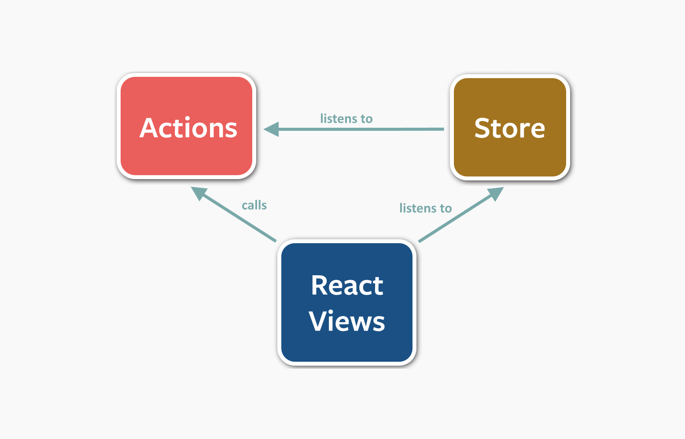

Como coordenar as ações para executarem em um fluxo?
MVC
Flux
Arquitetura
Define um fluxo único de dados
Para que serve?
Gerenciar os dados da aplicação
entrada de dados do usuario
dados de uma api
ações do usuário
Controlar como a aplicação deve se comportar com base na mudança destes dados
Quando devo usar?
Compartilhar estado entre componentes
Centralizar as regras de negócio da aplicação
Agir com efeitos colaterais
Implementações de Flux
Exemplo de Implementação
Adicionar items a uma lista
Sem Usar Libs
Vantagens
Aprendizado
Desvantagens
Código repetitivo
Refazer algo que já existe
Exemplo
Adicionar items a uma lista
### Resumo - Definir chamada na página - Definir Actions - Definir Store
Reflux
Uma das implementações mais populares
Não possui a figura do dispatcher
Cada action é um dispatcher
Reflux

Criado por Dan Abramov
Foi adotado pelo facebook como referência de flux
Rendeu um emprego no core team do React ao criador
Single Store
Estado global e imutável
Mobx
MobX - you can have many stores - you use @observer, or HOC or hooks to read data from store - you mutate your
observed values to modify store - you subscribe using @observer or hooks